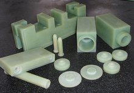

绝缘材料
用于使不同电位的导电部分隔离的材料。其电导率约在10 西/米以下。不同的电工产品中，根据需要,绝缘材料绝缘材料往往还起着储能、散热、冷却、灭弧、防潮、防霉、防腐蚀、防辐照、机械支承和固定、保护导体等作用。
分类
分类和性能绝缘材料种类很多，可分气体、液体、固体三大类。常用的气体绝缘材料有空气、氮气、六氟化硫等。液体绝缘材料主要有矿物绝缘油、合成绝缘油（硅油、十二烷基苯、聚异丁烯、异丙基联苯、二芳基乙烷等）两类。固体绝缘材料可分有机、无机两类。有机固体绝缘材料包括绝缘漆、绝缘胶、绝缘纸、绝缘纤维制品、塑料、橡胶、漆布漆管及绝缘浸渍纤维制品、电工用薄膜、复合制品和粘带、电工用层压制品等。无机固体绝缘材料主要有云母、玻璃、陶瓷及其制品。相比之下，固体绝缘材料品种多样，也最为重要。
不同的电工设备对绝缘材料性能的要求各有侧重。高压电工装置如高压电机、高压电缆等用的绝缘材料要求有高的击穿强度和低的介质损耗。低压电器则以机械强度、断裂伸长率、 耐热等级等作为主要要求。
绝缘材料的宏观性能如电性能、热性能、力学性能、耐化学药品、耐气候变化、耐腐蚀等性能与它的化学组成、分子结构等有密切关系。无机固体绝缘材料主要是由硅、硼及多种金属氧化物组成,以离子型结构为主,主要特点为耐热性高，工作温度一般大于180℃,稳定性好，耐大气老化性、耐化学药品性及长期在电场作用下的老化性能好；但脆性高，耐冲击强度低，耐压高而抗张强度低；工艺性差。有机材料一般为聚合物，平均分子量在10～10之间，其耐热性通常低于无机材料。含有芳环、杂环和硅、钛、氟等元素的材料其耐热性则高于一般线链形高分子材料。
影响绝缘材料介电性能的重要因素是分子极性的强弱和极性组分的含量。极性材料的介电常数、介质损耗均高于非极性材料，并且容易吸附杂质离子增加电导而降低其介电性能。故在绝缘材料制造过程中要注意清洁，防止污染。电容器用电介质要求有高的介电常数以提高其比特性。
特性
折叠特性一
〈1〉 耐化学侵蚀
〈2〉 具光泽，部份透明或半透明
〈3〉 大部分为良好绝缘体
〈4〉 重量轻且坚固
〈5〉 加工容易可大量生产，价格便宜
〈6〉 用途广泛、效用多、容易着色、部分耐高温
（7）存放货物可以起到防潮的效果塑料也区分为泛用性塑料及工程塑料，主要是用途的广泛性来界定，如PE、PP价格便宜，可用在多种不同型态的机器上生产。工程塑料则价格较昂贵，但原料稳性及物理物性均好很多，一般而言，其同时具有刚性与韧性两种特性。PVC透明塑料板：引进国外先进技术，选用高级进口原辅材料所生产的一种高强度、高透明塑料板。
折叠特性二
①大多数塑料质轻，化学性稳定,不会锈蚀；
②耐冲击性好；
③具有较好的透明性和耐磨耗性；
④绝缘性好，导热性低；
⑤一般成型性、着色性好，加工成本低；
⑥大部分塑料耐热性差，热膨胀率大，易燃烧；
⑦尺寸稳定性差，容易变形；
⑧多数塑料耐低温性差，低温下变脆；
⑨容易老化；
⑩某些塑料易溶于溶剂。
塑料可区分为热固性与热可塑性二类，前者无法重新塑造使用，后者可一再重复生产。塑料高分子的结构基本有两种类型：第一种是线型结构，具有这种结构的高分子化合物称为线型高分子化合物；第二种是体型结构，具有这种结构的高分子化合称为体型高分子化合物。有些高分子带有支链，称为支链高分子，属于线型结构。有些高分子虽然分子间有交联，但交联较少，称为网状结构，属于体型结构。两种不同的结构，表现出两种相反的性能。线型结构（包括支链结构）高聚物由于有独立的分子存在，故有弹性、可塑性，在溶剂中能溶解，加热能熔融，硬度和脆性较小的特点。体型结构高聚物由于没有独立的大分子存在，故没有弹性和可塑性，不能溶解和熔融，只能溶胀，硬度和脆性较大。塑料则两种结构的高分子都有，由线型高分子制成的是热塑性塑料，由体型高分子制成的是热固性塑料。
发展历程
发展概况最早使用的绝缘材料为棉布、丝绸、云母、橡胶等天然制品。在20世纪初，工业合成塑料酚醛树脂首先问世，其电性能好，耐热性高。以后又相继出现了性能更好的脲醛树脂、醇酸树脂。三氯联苯合成绝缘油的出现使电力电容器的比特性出现了一次飞跃（但因有害人体健康，后已停止使用）。同期还合成了六氟化硫。
30年代以来人工合成绝缘材料得到了迅速发展，主要有缩醛树脂、氯丁橡胶、聚氯乙烯、丁苯橡胶、聚酰胺、三聚氰胺、聚乙烯及性能优异称之为塑料王的聚四氟乙烯等。这些合成材料的出现，对电工技术的发展起了重大作用。如缩醛漆包线用于电机，使其工作温度和 可靠性提高，而电机的体积和重量大大降低。玻璃纤维及其编织带的研制成功及有机硅树脂的合成又为电机绝缘增加了H级这个耐热等级。
40年代以后不饱和聚酯、环氧树脂问世。粉云母纸的出现使人们摆脱了片云母资源匮乏的困境。
50年代以来，合成树脂为基的新材料得到了广泛应用，如不饱和聚酯和环氧等绝缘胶可供高压电机线圈浸渍用。聚酯系列产品在电机槽衬绝缘、漆包线及浸渍漆中使用，发展了E级和B级低压电机绝缘，使电机的体积和重量进一步下降。六氟化硫开始用于高压电器，并使之向大容量小型化发展。断路器的空气绝缘及变压器的油和纸绝缘部分地被六氟化硫所取代。
60年代含杂环和芳环的耐热树脂得到了大发展，如聚酰亚胺、聚芳酰胺、聚芳砜、聚苯硫醚等属 H级及更高耐热等级的材料。这些耐热材料的合成为以后发展 F级、H级电机创造了有利条件。聚丙烯薄膜在这一时期也成功地用于电力电容器。
70年代以来新材料的开发研究相对比较少，这一时期主要是对现有材料进行各种改性及扩大应用范围。对矿物绝缘油采用新方法精制以降低其损耗；环氧云母绝缘在提高其机械性能和实现无气隙以提高其电性能方面做了很多改进。电力电容器由纸膜复合结构向全膜结构过渡。1000千伏级特高压电力电缆开始研究用合成纸绝缘取代传统的天然纤维纸。无公害绝缘材料70年代以来也发展很快，如以无毒介质异丙基联苯、酯类油取代有毒介质氯化联苯，无溶剂漆的扩大应用等。随着家用电器的普及，其绝缘材料着火而导致重大火灾事故屡有发生，所以对阻燃材料的研究引起了重视。
发展趋势绝缘材料的研制和开发的水平是影响制约电工技术发展的关键之一。从今后趋势来看，要求发展耐高压、耐热绝缘,无溶剂无公害绝缘,复合绝缘,耐腐蚀、耐水、耐油、耐深冷、耐辐照及阻燃材料，发展节能材料。重点是发展用于高压大容量发电机的环氧云母绝缘体系；中小型电机用的F、H级绝缘系列；高压输变电设备用的六氟化硫气态介质；取代氯化联苯的新型无毒合成介质；高性能绝缘油；合成纸复合绝缘；阻燃性橡塑材料和表面防护材料等，同时要积极加速传统电工设备用绝缘材料的更新换代。
{kind=link}